01Rationale
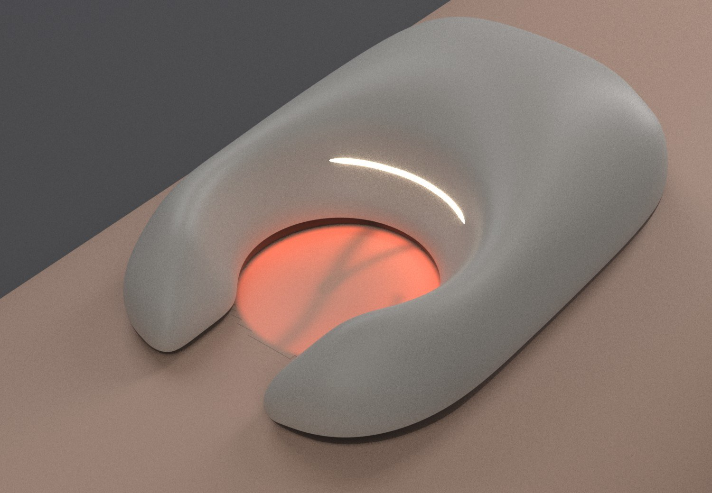
In use (render): red-lit skin in the window, veins as dark lines; status seam on.
How it works
Twelve red LEDs sit in black pockets just outside a 30 mm crescent window and push light into the skin under a narrow lip. It scatters through the tissue and glows back out inside the window; blood absorbs it, so veins read as dark lines. Nothing shines toward the eye.
Two banks, visible light only. 660 nm deep red reaches deeper and is absorbed less by melanin (darker skin, deeper veins); 620 nm red-orange looks ~5× brighter to the eye for superficial veins.
Design moves
- One G2 skin. The whole stone is a single cubic B-spline surface — curvature-continuous by construction, no fillets, no flats (its two parametric poles are G1 today; made exact at the CAD gate). The only edge is the waterline.
- The waterline. One planar parting line low on the flank splits a warm-grey PETG top from a black, light-tight optical sole. Both print outer-surface-up, no supports.
- The seal is the form. A gently concave sole (R120) saddles the forearm; the index finger lands just behind the window, where pressing seals the lip.
- Hidden controls. A 0.5 mm finger dimple is the button (flexing membrane). A hairline crescent on the rim glows through 0.6 mm PETG for status and charging. USB-C sits on the waterline at the tail.
02Three forms, one envelope — same 30 mm window, 16 mm gap, waterline and sole
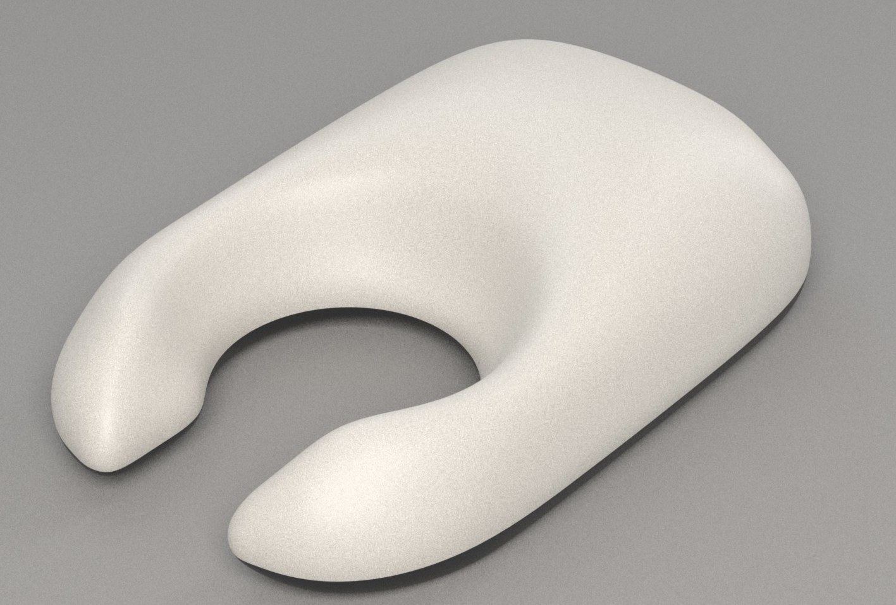
A — Pebblechosen
One convex dome, the crescent bored through its nose. 90.4 × 58.9 × 25.4 mm.
600 mAh cell fits · 1.9 mmswitch fits · 0.6 mmsupport-freeconvex everywhere
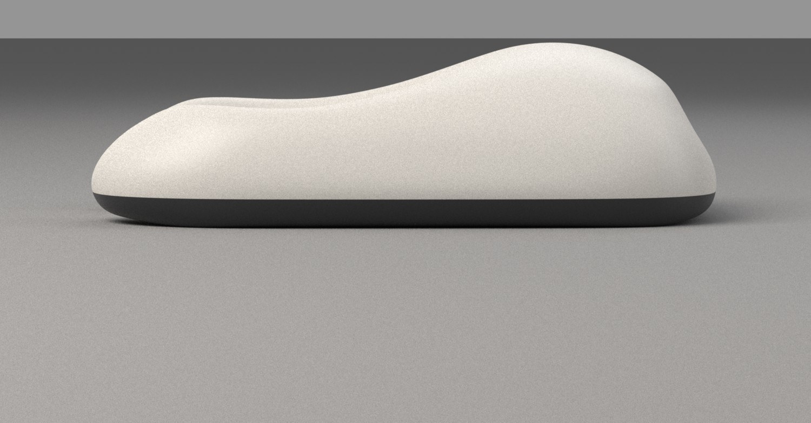
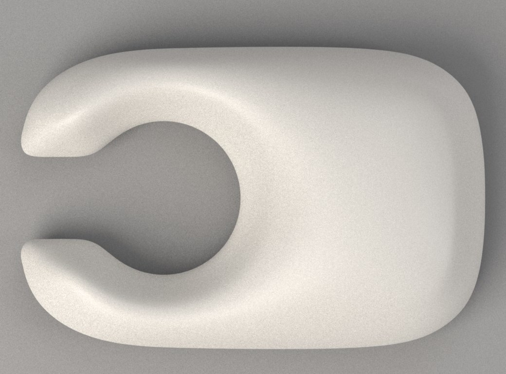
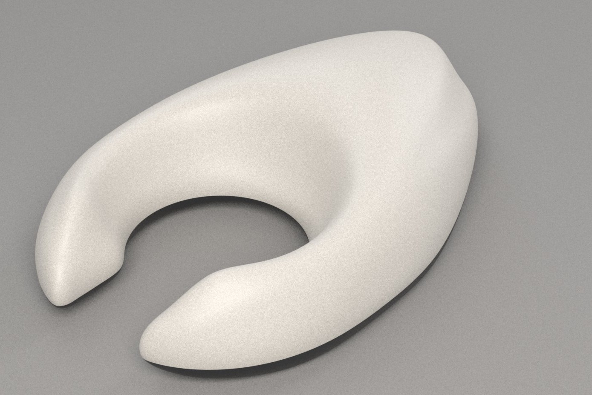
B — Crescent
Teardrop; crown on the window rim; horns taper to soft points. The most dynamic.
cell does not fit the tapering tailswitch fitssupport-free
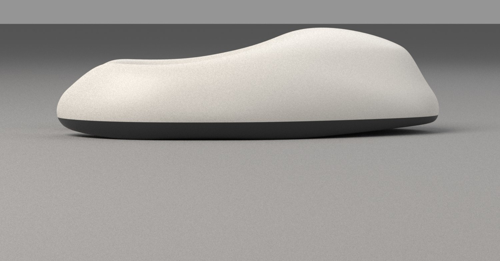
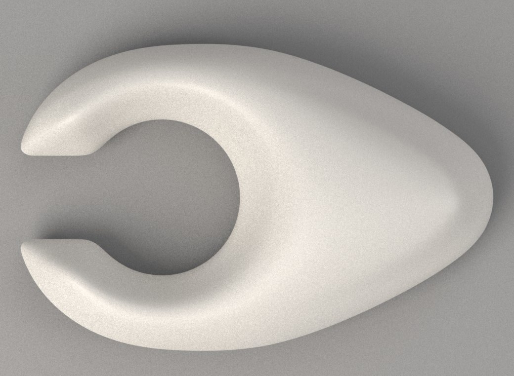
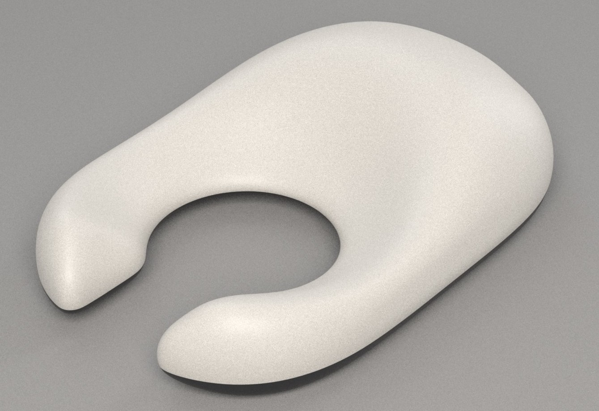
C — Hagstone
Flat lens with a worn crater; the opening is the hero. Lowest at 23 mm.
no height for cell or switchfunnel lets in room lightsupport-free
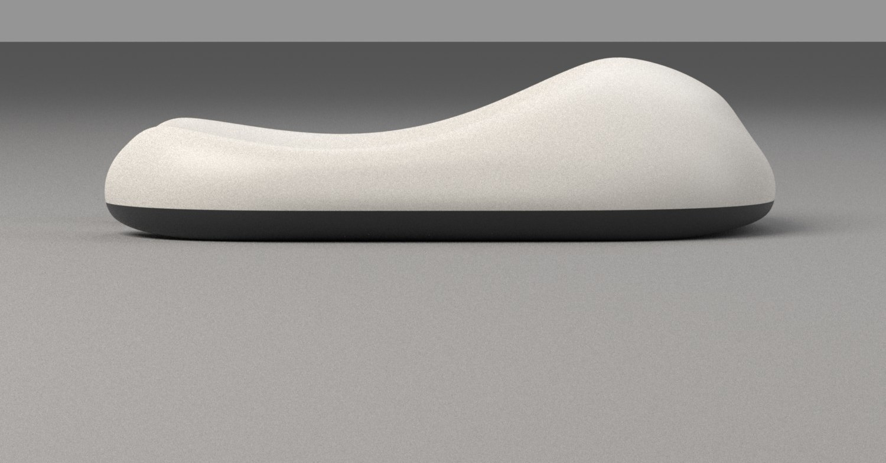
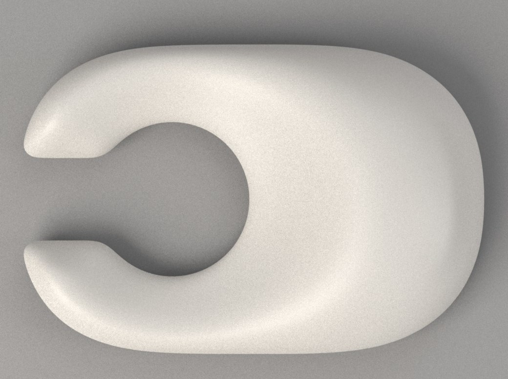
03Chosen: A — Pebble
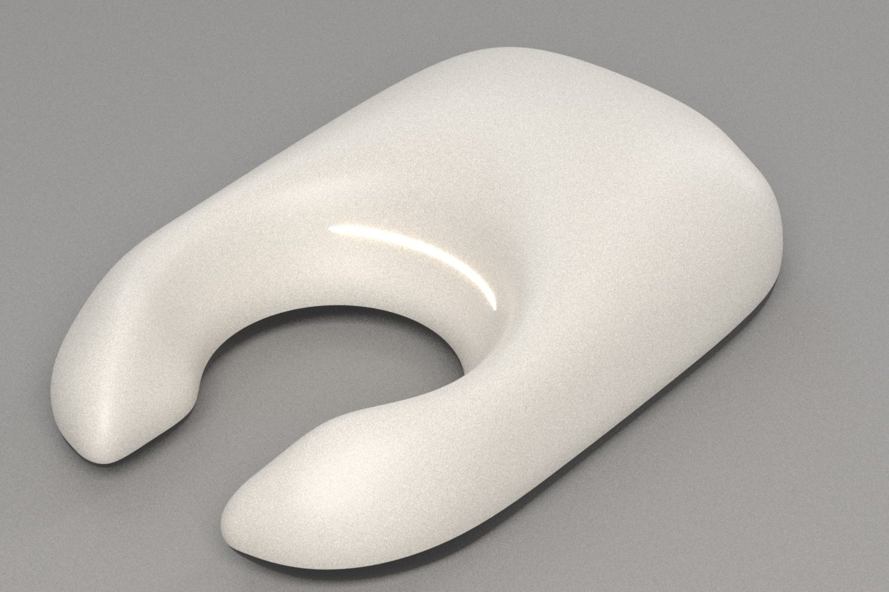
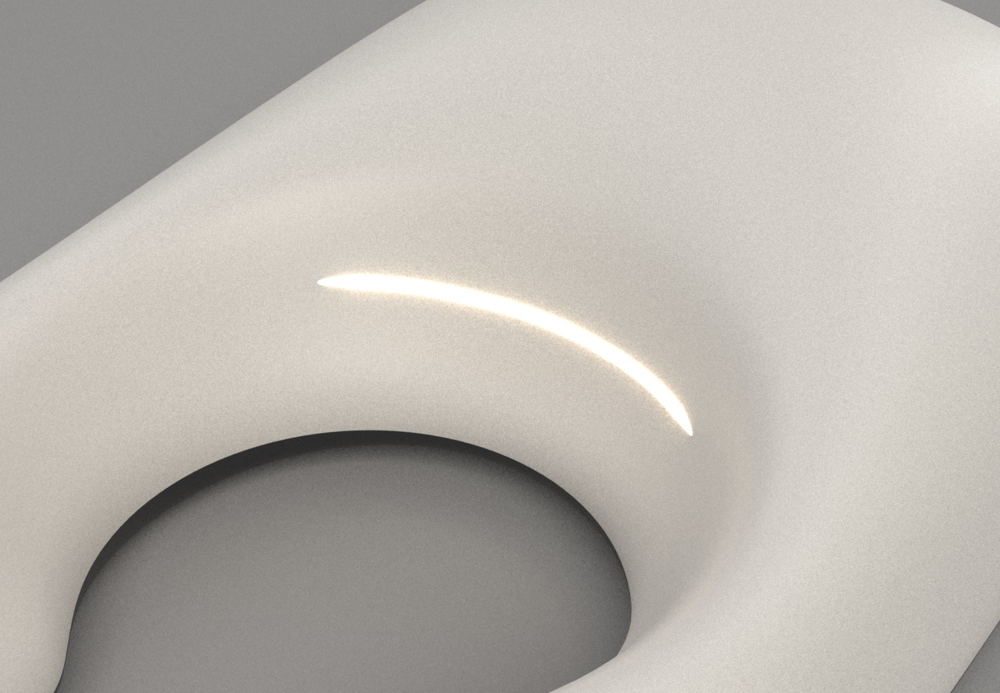
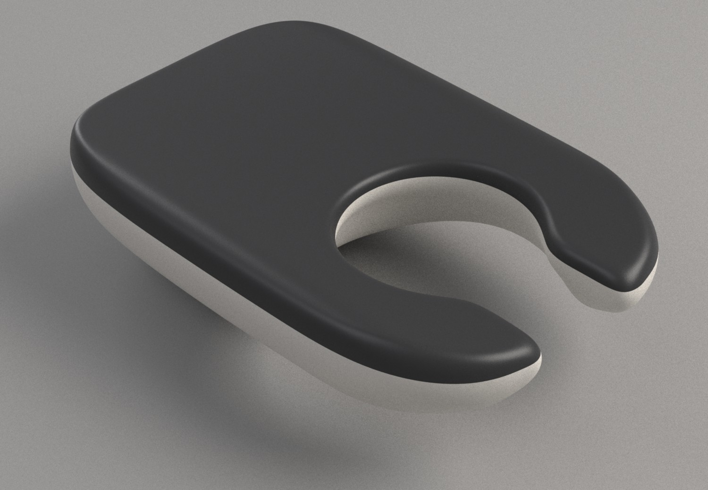
90×59×25
mm (brief ~90×58×26)
≈ 55 g
estimate (limit 80 g)
2.7–5.8 h
full brightness, 600 mAh (need 45 min)
23–50 mA
per LED, capped by skin ≤ 41 °C
≈ $56–70
one unit incl. PCB + shipping (≤ $75)
Why A
- Only A packages. The 30.5 × 42 × 5.4 mm cell lies across the crown, on the sole inside a PCB cut-out; the switch sits under the dimple just ahead of it. B's tail and C's crater cannot hold them.
- It reads as one stone. A single convex dome: the horns taper out of the body instead of growing from it, so it never reads as a horseshoe.
- It holds like a pebble. Thumb and middle finger pinch the tall mid-flanks; the index presses just behind the window, where the seal needs force. Symmetric for either hand.
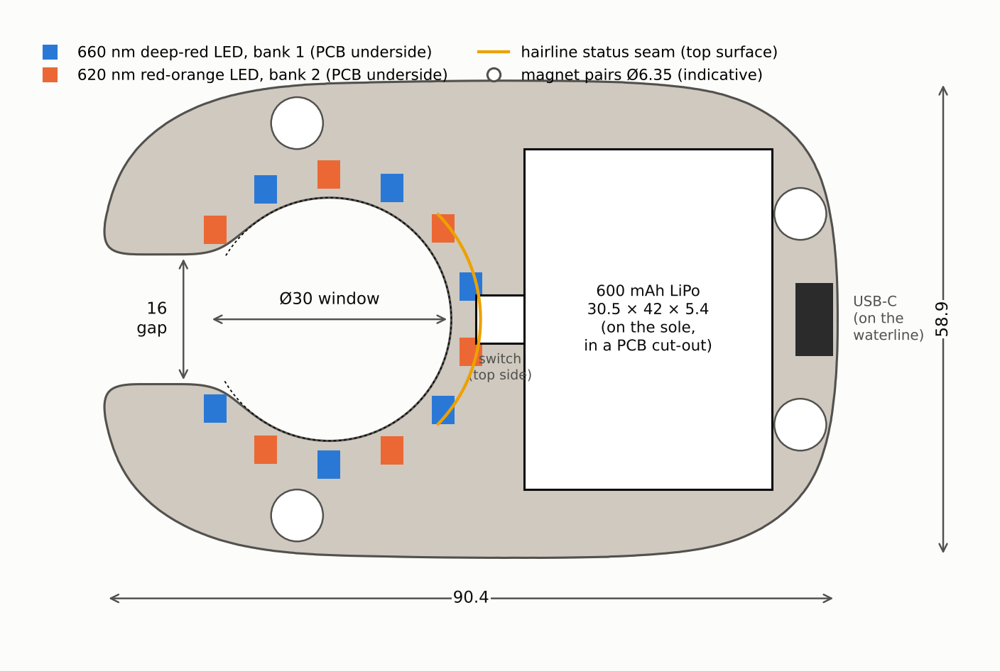
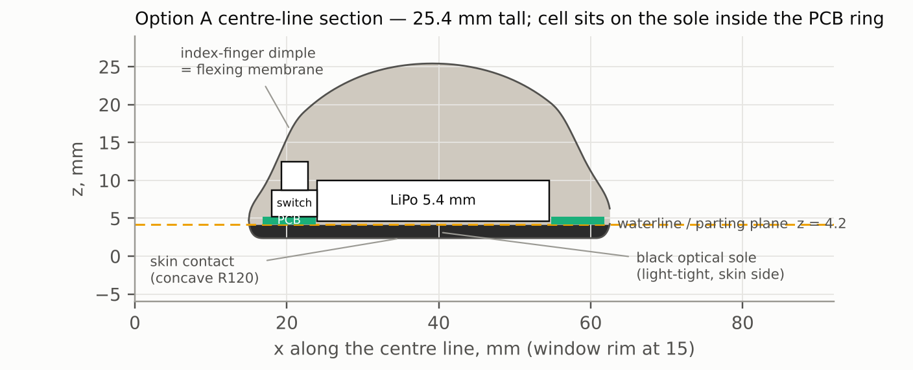